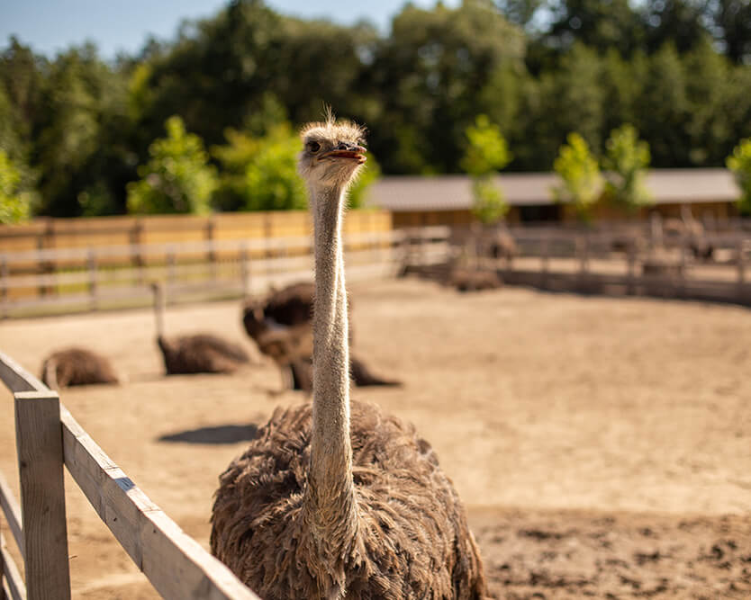

Deve kuşu (Struthio camelus), dünyanın en büyük ve en ağır kuş türü olarak Afrika’nın açık savanlarında ve yarı çöl bölgelerinde yaşar. Uçamayan bir kuş olmasına rağmen uzun ve güçlü bacakları sayesinde saatte 70 km’ye varan hızlara ulaşabilir, bu da onu karada en hızlı kuş yapar. Büyük gözleriyle keskin bir görüşe sahip olan deve kuşu, sürüler halinde dolaşarak hem avcılardan korunur hem de yiyecek bulmayı kolaylaştırır. Genellikle bitkilerle beslenir, ancak böcek ve küçük hayvanları da tüketebilir. Tek eşli veya çok eşli yaşam sürebilen bu tür, devasa yumurtalarıyla da dikkat çeker; bir deve kuşu yumurtası yaklaşık 1,5 kg ağırlığındadır. Tarih boyunca gücü, dayanıklılığı ve farklı görünümüyle insanlık için ilgi çekici bir figür olmuş, ekosistemde ise hem av hem de otçul bir denge unsuru olarak önemli bir rol üstlenmiştir.